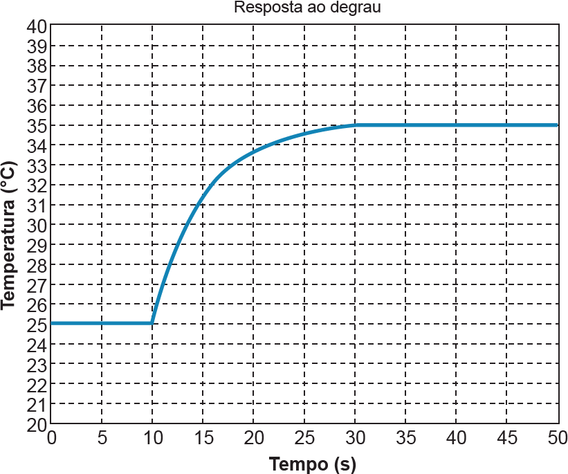

Considere um chuveiro elétrico no qual a temperatura da água pode ser selecionada pelo usuário entre a temperatura ambiente e 50 ²C. A resistência do chuveiro dissipa energia elétrica em forma de calor para aquecer a água, e é alimentada por um conversor CA/CC, de modo que a tensão pode ser alterada, variando, assim, a potência.
Para levantar a característica dinâmica do sistema, um engenheiro aplicou um degrau de 0 V a 40 V no instante 10 segundos, com vazão de água constante, obtendo a resposta de temperatura mostrada na figura a seguir. Pode-se observar que, inicialmente, a água está em temperatura ambiente.
Resposta ao degrau do sistema em malha aberta não controlado.
Posteriormente, o engenheiro decidiu implementar um controle de temperatura em malha fechada
utilizando um compensador proporcional-integral: .
Com base nos dados apresentados, e considerando que o sistema é linear e de primeira ordem, faça o que se pede nos itens a seguir.